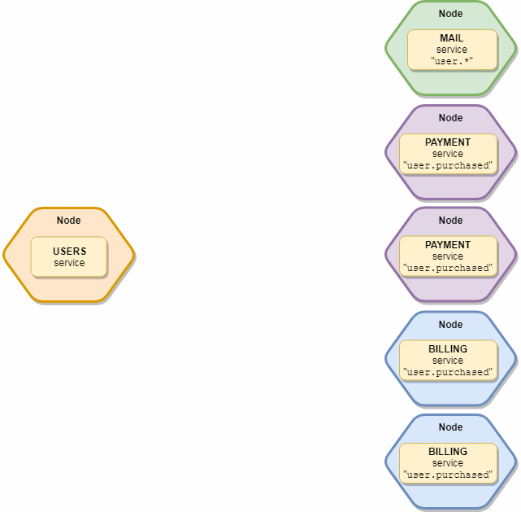

Broker has a built-in event bus to support Event-driven architecture and to send events to local and remote services.
Balanced events
The event listeners are arranged to logical groups. It means that only one listener is triggered in every group.
Example: you have 2 main services:
users&payments. Both subscribe to theuser.createdevent. You start 3 instances fromusersservice and 2 instances frompaymentsservice. When you emit theuser.createdevent, only oneusersand onepaymentsservice instance will receive the event.

The group name comes from the service name, but it can be overwritten in event definition in services.
Examplemodule.exports = {
name: "payment",
events: {
"order.created": {
// Register handler to the "other" group instead of "payment" group.
group: "other",
handler(payload) {
// ...
}
}
}
}
Emit balanced events
Send balanced events with broker.emit function. The first parameter is the name of the event, the second parameter is the payload.
To send multiple values, wrap them into an Object.
// The `user` will be serialized to transportation. |
Specify which groups/services receive the event:// Only the `mail` & `payments` services receives it
broker.emit("user.created", user, ["mail", "payments"]);
Broadcast event
The broadcast event is sent to all available local & remote services. It is not balanced, all service instances receive it.
Send broadcast events with broker.broadcast method.broker.broadcast("config.changed", config);
Specify which groups/services receive the event:// Send to all "mail" service instances
broker.broadcast("user.created", { user }, "mail");
// Send to all "user" & "purchase" service instances.
broker.broadcast("user.created", { user }, ["user", "purchase"]);
Local broadcast event
Send broadcast events to only all local services with broker.broadcastLocal method.broker.broadcastLocal("config.changed", config);
Subscribe to events
Subscribe to events in ‘events’ property of services. Use of Wildcards (?, *, **) are available in event names.
module.exports = { |
Internal events
The broker broadcasts some internal events. These events always starts with $ prefix.
$services.changed
The broker sends this event if the local node or a remote node loads or destroys services.
Payload
| Name | Type | Description |
|---|---|---|
localService |
Boolean |
True if a local service changed. |
$circuit-breaker.opened
The broker sends this event when the circuit breaker module change its state to open.
Payload
| Name | Type | Description |
|---|---|---|
nodeID |
String |
Node ID |
action |
String |
Action name |
failures |
Number |
Count of failures |
$circuit-breaker.half-opened
The broker sends this event when the circuit breaker module change its state to half-open.
Payload
| Name | Type | Description |
|---|---|---|
nodeID |
String |
Node ID |
action |
String |
Action name |
$circuit-breaker.closed
The broker sends this event when the circuit breaker module change its state to closed.
Payload
| Name | Type | Description |
|---|---|---|
nodeID |
String |
Node ID |
action |
String |
Action name |
$node.connected
The broker sends this event when a node connected or reconnected.
Payload
| Name | Type | Description |
|---|---|---|
node |
Node |
Node info object |
reconnected |
Boolean |
Is reconnected? |
$node.updated
The broker sends this event when it has received an INFO message from a node, (i.e. a service is loaded or destroyed).
Payload
| Name | Type | Description |
|---|---|---|
node |
Node |
Node info object |
$node.disconnected
The broker sends this event when a node disconnected (gracefully or unexpectedly).
Payload
| Name | Type | Description |
|---|---|---|
node |
Node |
Node info object |
unexpected |
Boolean |
true - Not received heartbeat, false - Received DISCONNECT message from node. |
$broker.started
The broker sends this event once broker.start() is called and all local services are started.
$broker.stopped
The broker sends this event once broker.stop() is called and all local services are stopped.
$transporter.connected
The transporter sends this event once the transporter is connected.
$transporter.disconnected
The transporter sends this event once the transporter is disconnected.